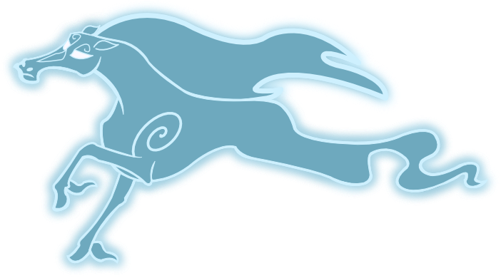
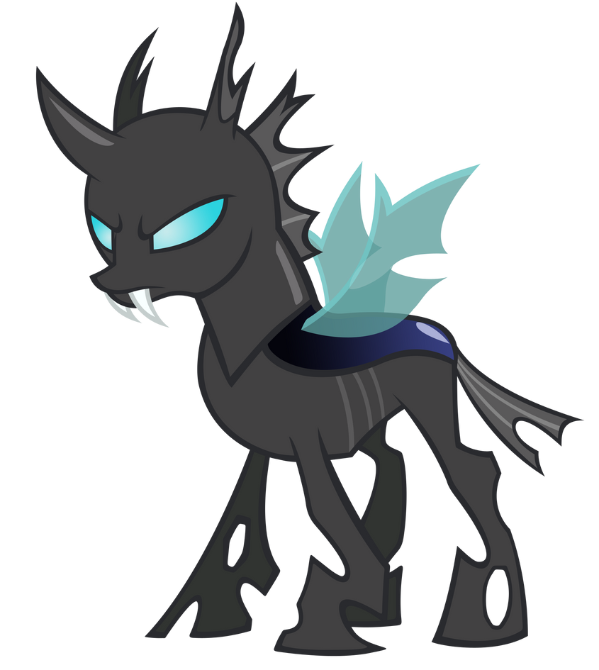
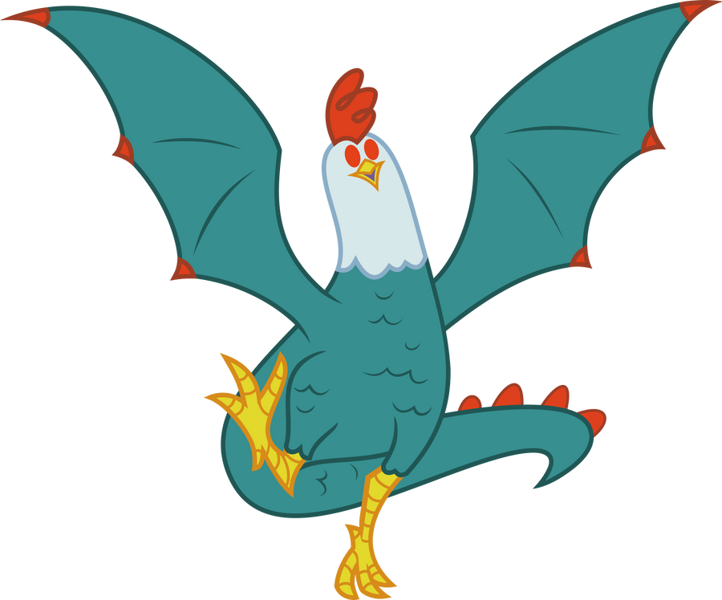

Windigos

Espíritos do inverno que provocam nevascas.
Ver ficha de Windigos →CONHEÇA AS CRIATURAS
Escolha uma das quatro criaturas para ler sua ficha.

Espíritos do inverno que provocam nevascas.
Ver ficha de Windigos →
Criaturas que mudam de aparência para imitar pôneis.
Ver ficha de Changelings →
Lobos feitos de galhos e pedaços de madeira.
Ver ficha de Timberwolves →
Criatura que transforma outros seres em pedra com o olhar.
Ver ficha de Cockatrice →As fichas comentam acontecimentos da série e estão disponiveis os links.